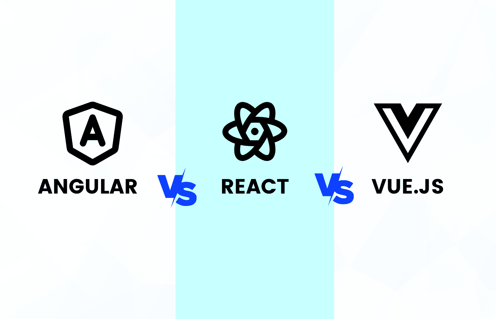

Front End Web Development is one of the easiest programming jobs to break into and learn, as well as one of the most fun! Even though there are still many
other avenues to take when learning to code, learning how to build websites and web apps is one of the most practical paths. There are around 8,727 jobs for
Front End jobs on
Indeed at the moment. What is the salary for front end developers though? According to sources, it can be around $100,000 per year! So
now that we established why Front End is a good path to take, lets go over the 5 main steps!
Step 1 | Choose A Course
No, I'm not talking about coding bootcamps here or a college course, I'm talking about free online courses. Going self-taught is usually the cheapest and
best way for most people. There are many options, for example:
Literally the only way to learn programming is to practice by playing around with the code and making projects.
If you don't do this, you won't really learn anything in the long term. Usually courses have projects that you do, but if not, or if they don't seem intresting, build
your own websites! Remember, if you barely have HTML knowledge, don't create the next YouTube web app. Create something simple. Build according to your
knowledge level. And remember, the point of these projects is to learn, so challenge yourself a little bit and try to learn how to better build what your trying to build.
Step 3 | Portfolio Projects
Well, how do you think people will hire you if you only make basic for fun websites? You need to start creating portfolio projects.
How do you do this? Well, at this point you should have knowledge of good semantic HTML and enough CSS that you can make basic kinda "good" looking sites
that are responsive. Finally you should know basic JavaScript and enough knowledge of it you can apply JavaScript in your own projects in a practical way.
So, first you need to come up with a website idea that is more than just a simple blog or a todo app. You need to create something that actually matters.
This can be something simple like a mock-up of a Hotel Service site or a functional weather web app. Maybe after a few of these you can create your own original functional website.
What is this website? Well it can be website to learn about how the YouTube algorithim works or a guide to learn Front End Development! Either way, the website should be planned
and built like its an actual website for a client.
Step 4 | Learn A Framework
You need to start learning a framework like Vue, Angular, or React. Find which one best suits you and which one is used more in front end jobs. Master that framework and practice it.

Step 5 | Create Your Portfolio
Here you go. Use everything you have learned including the framework you mastered and create your portfolio website that includes all your social links (that means your GitHub and any sites like that),
your portfolio projects, and your story and who you are. Take as much time as you need to really put your all into making it. Do your best and make sure that you treat it like its your child, because this
really will make or break some interviews. Make sure that you also understand how to design your portfolio UI before making it. Remember to plan it out before building it and also make a mock-up in something like Canva.
Conclusion
From here it is your own path that you must take. Maybe you no longer want to work for a company, maybe you want to do freelancing instead. Or maybe you want to try to learn more things before applying for jobs. Whatever you do next, don't give up.
Thank you for reading, this was just a fun project to practice basic HTML :)